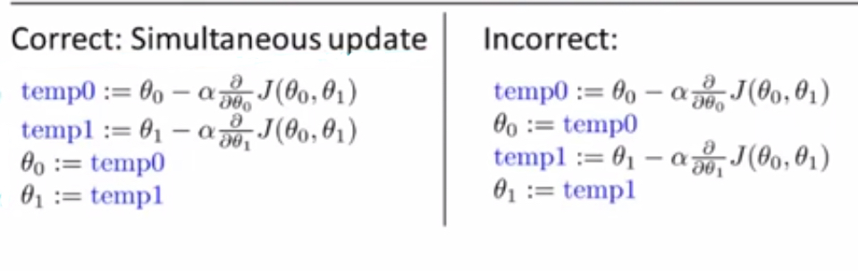

分类
- 机器学习有很多分类，主要可以分为监督学习（supervised learning）和无监督学习（unsupervised learning）。
- 监督学习是指教计算机怎么学习，无监督学习是指让计算机自己学习。
- 监督学习可以分为分类问题(classification problems)和回归问题(regression problems)，分类问题对应于离散的情况，而回归问题对应于连续的情况。对于只有少量离散值的问题，应该将它作为分类问题。
- 在无监督学习中，所给的数据没有标签或者标签都相同，常使用聚类算法(clustering algorithm)，将数据集划分为不同的簇；另一个使用无监督学习方法的问题时鸡尾酒会的音频分离问题。
线性回归(linear regression)
- 线性回归中假设函数(hypothesis function)$h_{\theta}(x)$用来预测y是x的线性函数。
Linear regression with one variable
- Cost function（代价函数）有助于我们弄清楚如何把最有可能的直线与我们的数据相拟合。
- 在线性回归中假设函数的形式为，其中称为模型参数。
- 如何选择和这两个参数？选取的原则是对于我们给定的训练集中的数据，使尽可能靠近y。也就是求解最小化问题(m是训练集中样本的数量)。
- 在该问题中的代价函数为，代价函数的参数是模型参数，我们的目标是最小化代价函数，即求。
- 上述代价函数也被称为平方误差函数，有时也被称为误差平方代价函数。平方误差代价函数是解决回归问题最常用的手段。
梯度下降法
- 可以使用梯度下降法(gradient descent algorithm)将代价函数最小化。
- 梯度下降法的步骤为:
repeat until convergence{
(for j = 0 and j = 1)
}
- 注意上述步骤在实现时要做到同步更新。

- 其中是学习率(learning rate)，它用来控制梯度下降时，我们迈出多大的步子。如果太小，我们就需要很多步才能达到全局最优解或者局部最优解。如果值很大，梯度下降可能越过最低点，甚至可能无法收敛(converge)，甚至发散(diverge)。
- 递归下降法可以收敛到一个局部最小值，甚至是在学习率固定的情况下。因为当我们接近一个局部最小值时（因为导数在逐渐减小），梯度下降法将会自动地减小步子。因此， 我们不需要去减小学习率。
- 对于线性回归问题，梯度下降算法的步骤为：
repeat until convergence{
}
- 注意update and simultaneously
- 可能会有这么一个问题：使用梯度下降法不会陷入局部最优解吗？因为线性回归的代价函数是一个凸函数(convex function)，该函数没有局部最优解，只有一个全局最优解，故不会出现这种情况。
- 上面的梯度下降算法也常被称作”Batch” Gradient Descent, “Batch” means each step of gradient descent uses all the training examples.